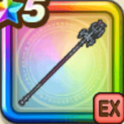

竜神王の杖
攻略班 9.5点 / 竜神王のおたけび竜神王のしゃくねつ永遠の黒炎竜神王の結界我がしもべたちよ力を貸せ竜神王の威光竜神王の威厳
くわしい特徴
【レベル別習得スキル】 Lv1攻撃力+20 Lv1【ドラゴン】ブレスダメージ+5% Lv20竜神王のおたけび（消費MP：45）敵全体にブレス大ダメージを与え、まれに確率でテンションを下げる Lv30竜神王のしゃくねつ（消費MP：69）敵全体に敵の数に応じて威力の変化するメラ属性ブレス絶大ダメージ(メタル系に+80)を与える Lv30永遠の黒炎（消費MP：69）敵全体に敵の数に応じて威力の変化するドルマ属性ブレス絶大ダメージ(メタル系に+80)を与える Lv35ドラゴン系へのダメージ+5% Lv40ドラゴン系へのダメージ+5% Lv45ブレスダメージ+2% Lv50竜神王の結界（消費MP：最大MPの2%）戦闘開始時に領域「竜神王の結界」を発動。味方行動時にまれに確率でテンションを上げ、自身の時さらに敵全体のテンションをまれに確率で下げる Lv50我がしもべたちよ力を貸せ（消費MP：20）自身のそうびしている「ドラゴン系」「????系」のこころの数だけ一部のステータスが上昇し、HPとMPを回復する(最大4つ合致で10%) Lv50竜神王の威光（消費MP：3）自身の発動した領域「竜神王の結界」の効果で敵のテンションを2回下げることに成功すると、次に与えるブレスダメージが1.2倍になる Lv50竜神王の威厳（消費MP：最大MPの2%）「竜神王のおたけび」で自身が敵のテンションを3回下げることに成功すると領域「竜神王の結界」を発動する 【限界突破スキル】 1凸スキルの斬撃・体技・ブレスダメージ+7% 2凸スキルの斬撃・体技・ブレスダメージ+7% 3凸スキルの斬撃・体技・ブレスダメージ+7% 4凸スキルの斬撃・体技・ブレスダメージ+7%